Initial Provisioning
Configured the instance name, AMI, instance type, network, storage, and User Data script to bootstrap a simple web server.
This report covers the full lifecycle of an EC2 instance: launching with a User Data script, monitoring its health, configuring firewall rules for HTTP access, resizing compute and storage resources, and testing termination protection as a safety mechanism.
An EC2 instance named Web Server was created using Amazon Linux 2023, type t3.micro, with no key pair and a lab VPC. A User Data script automated Apache installation to serve a basic web page.
Configured the instance name, AMI, instance type, network, storage, and User Data script to bootstrap a simple web server.
Verified status checks, reviewed CloudWatch metrics, took an instance screenshot, and enabled HTTP traffic through an inbound security group rule.
Stopped the instance to upgrade from t3.micro to t3.small, expanded the EBS volume from 8 GiB to 10 GiB, and validated termination protection behavior.
Each service played a specific role in the lab workflow.
Core service used to create the virtual machine that hosted the web server.
Base OS template selected to launch the instance: Amazon Linux 2023.
Virtual firewall that controlled inbound traffic. The page was unreachable until HTTP on port 80 was allowed.
Persistent block storage attached to the instance. Its size was increased from 8 GiB to 10 GiB during the resize task.
Source of monitoring metrics visible from the instance's Monitoring tab.
User Data automated the web server installation at boot. Termination protection prevented accidental deletion during testing.
Detailed record of each task, with screenshots showing exactly what was configured at every step.
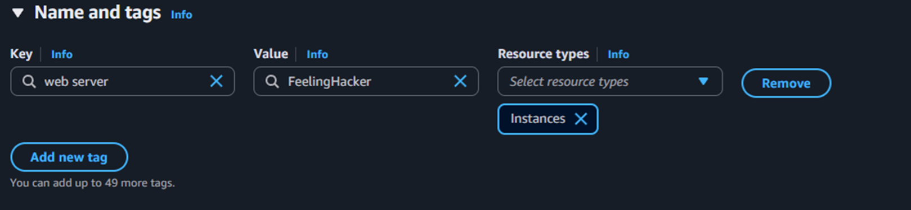
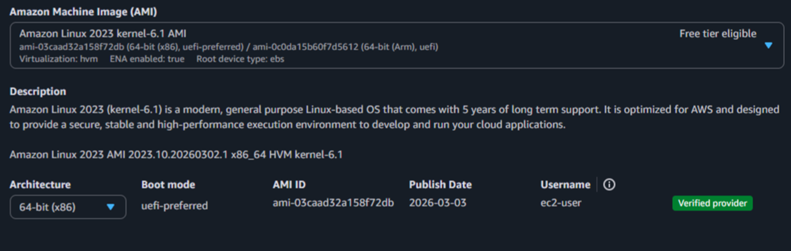
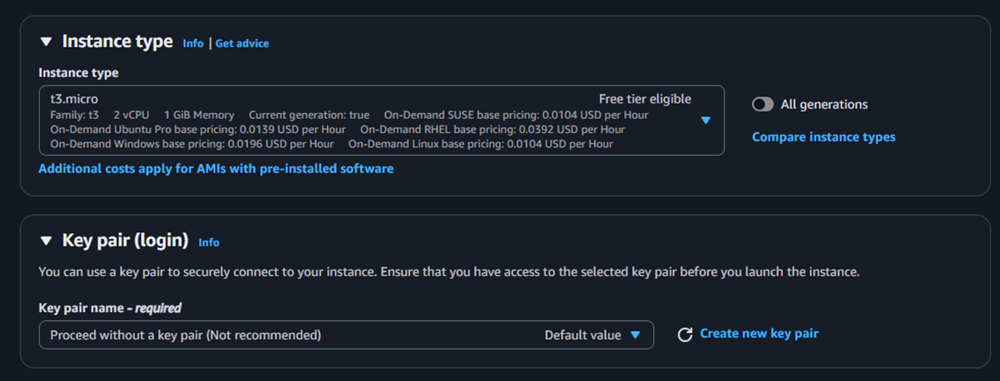
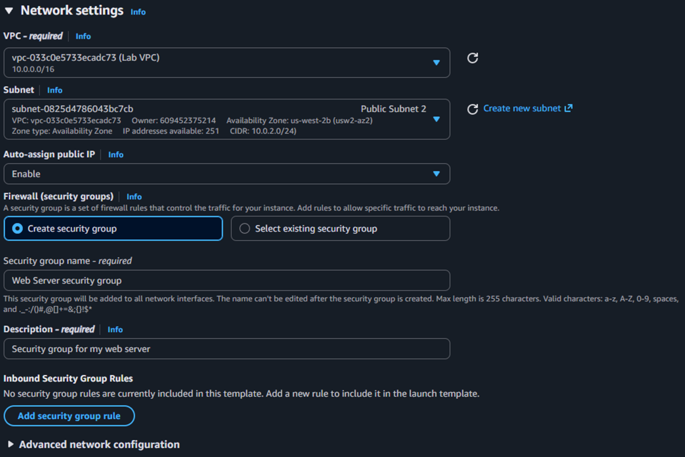
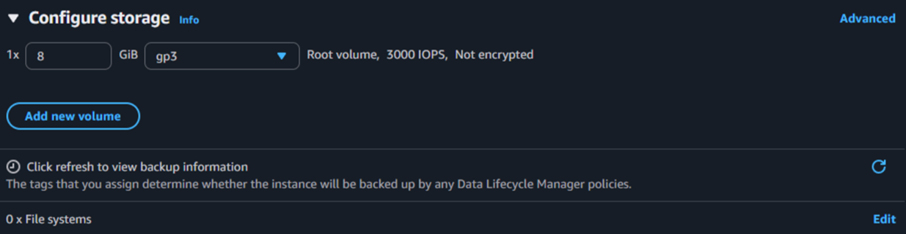
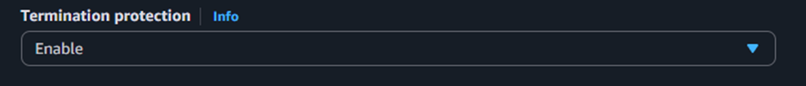
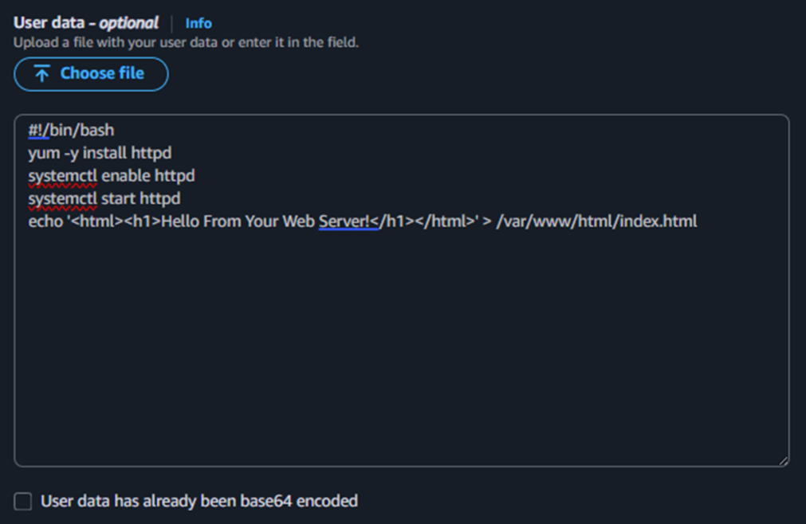
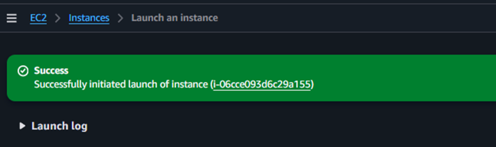
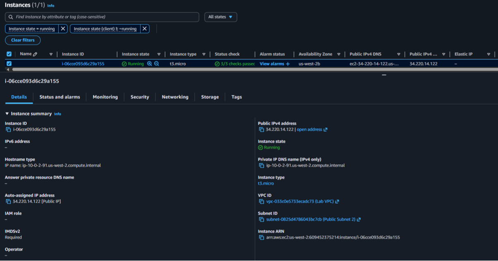
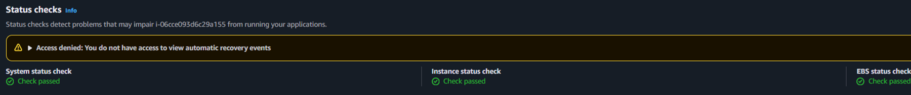
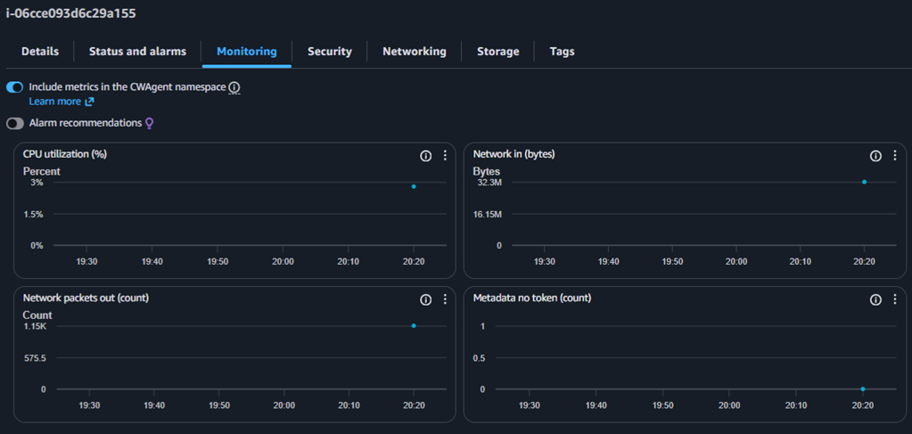
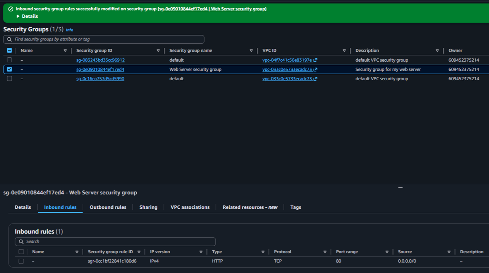
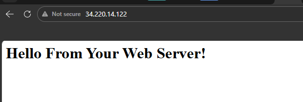
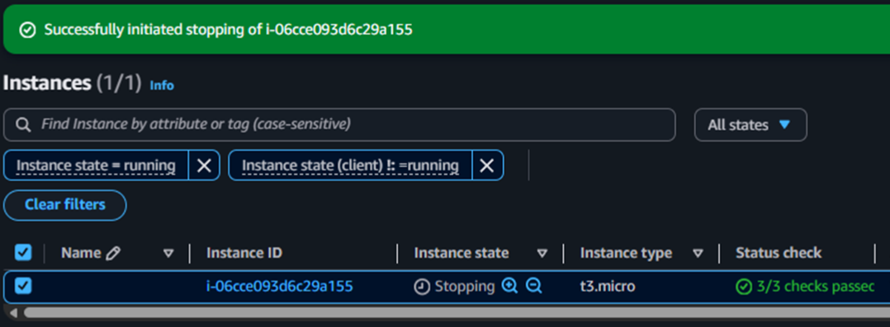
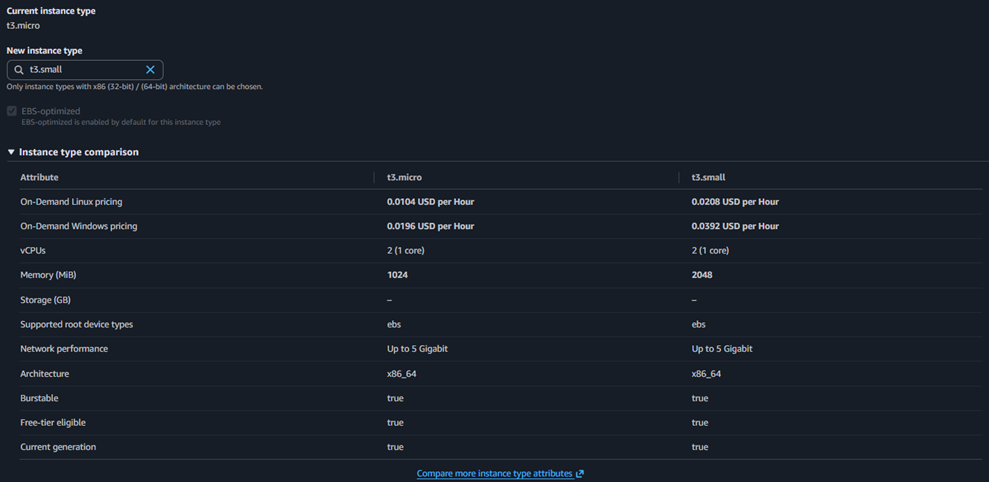
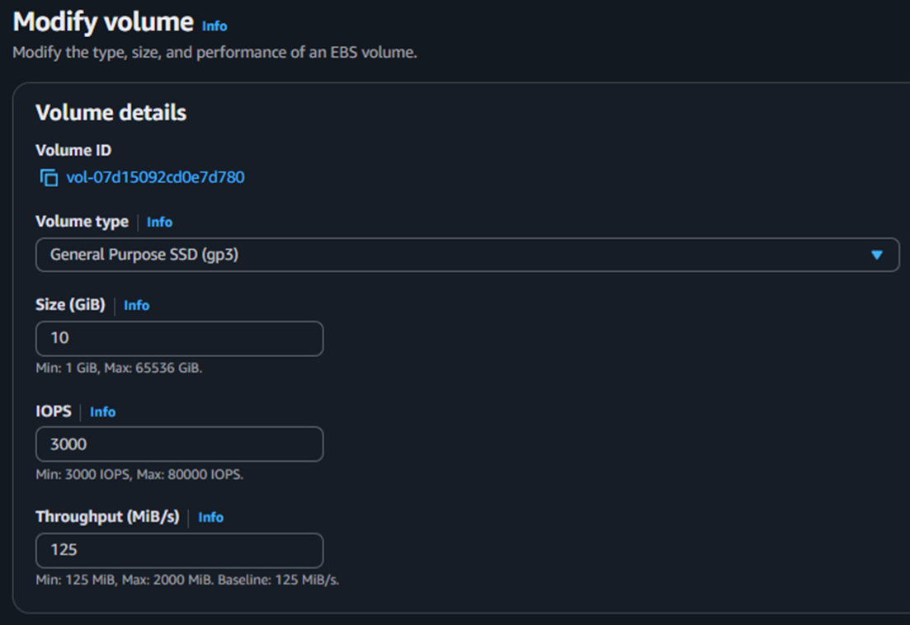
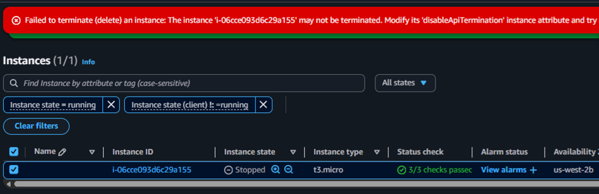
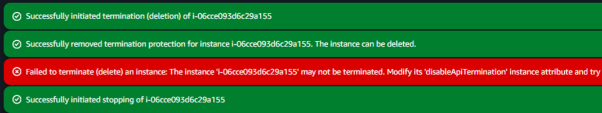
This lab covered the fundamental lifecycle of an EC2 instance: creation, configuration, monitoring, access control, resource modification, and secure termination. Beyond the console interface, the key takeaway was connecting each action to its operational impact: availability, security, scalability, and administrative control.
The most valuable lesson was understanding that a "running" instance is not the same as a "production-ready" instance. Proper network rules, monitoring, and protection mechanisms must be in place before an instance can be considered fully operational.